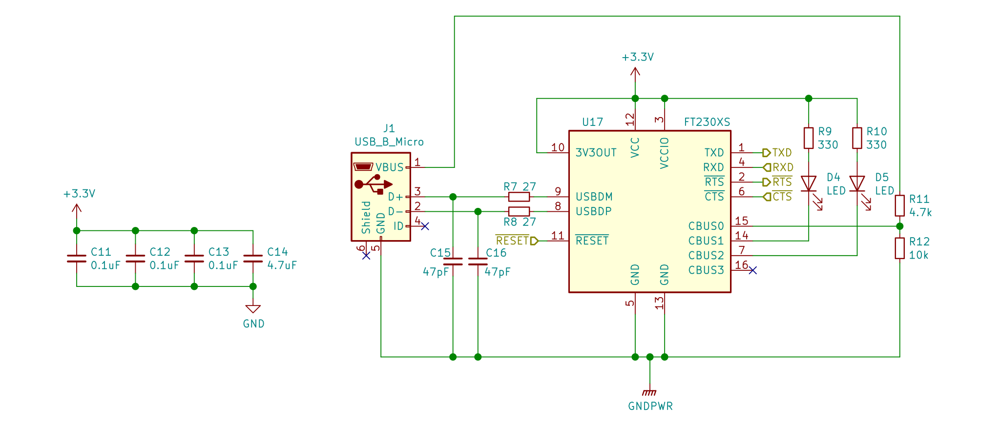

The TRS-20 - CPU board design


In this post I’ll document my progress on the design of the CPU board. I’m still happy with the PC104 form factor, so into a 10cm² area I’ll see if I can pack on the socketed processor, a clock, the PC104 headers, a power supply, SRAM, and ROM. Snuck in around this needs to be the address decoding logic, glue logic, and a few status LEDs.
I’ve also switched from Eagle CAD to KiCad for this stage of the project. The main motivation is frugality: I want to design a schematic of moderate complexity, which means multiple schematic files are desirable, but that feature is not part of the free edition of Eagle. As a bonus: the 3D rendering feature of KiCad is pretty fun, and adding parts is easy enough that I’m spending more time hunting for 3D models of parts than worrying about finding footprints or schematics.
The board’s main features
The motherboard will be responsible for the core of the computer, with everything required for program execution natively on-board. It’s practically a single-board computer, though as seems to be the pattern for Z80-based SBCs there will be at most serial I/O on board, and that only if space permits.
The chief elements to fit on the board, in decreasing order of priority, are:
-
Without this, there’s no computer. Because the days of 5V are waning, I’ve decided to settle on a Z8L180-20 part at 3.3V. Whether I use a socketed part or risk a QFP-80 is still to be determined.
-
This needs to be close to the CPU. An 18.432MHz MEMS oscillator will have excellent rise and fall times, take up little room, and provide a USART compatible clock.
The power and reset supervision circuitry
The CPU needs to be held in reset long enough to initialise, and the single-IC solutions for this problem will also debounce my reset switch for me. This can’t reasonably be off-board, the CPU needs it to start.
-
Like the clock, this also needs to be close to the CPU for zero wait state access. There’s little choice other than a TSOP-II 48 pin part here.
-
While I could offload power regulation in a pinch I’d prefer to keep it on-board. I’ll feed in a Raspberry Pi 2.5A 5.1v Micro-USB supply and regulate that down to 3.3v and 1.2v on-board.
-
This could move off-board if necessary, but since it’s essential for booting I’d prefer not to. The tricky part for the ROM is how to program it. A boot loader in the ROM allowing it to be programmed via the Z180 has appeal but risks bricking my system, so this part needs to be socketed.
-
Responding to interrupts requires programmable I/O registers. I’ve looked at a few ways to do this, and in the end I’ve settled on an ICE40HX1K FPGA, which should offer me plenty of flexibility to do other things as I think of them too, if I can get it in-system programmable. Running it as an I2C controller, for example, would be an interesting use of a few pins on the main header.
-
Without some kind of I/O I really won’t have a clue if my system is working. Ensuring I keep room for USART headers lets me communicate with the CPU after some amount of ROM wrangling, and get into a faster iteration on system development than I would otherwise have.
This is a lot to try and pack onto a 10cm2 board. I had originally planned to stick to two layers, but that makes routing substantially harder and I’ve caved and spent extra on four layers. I can offload some parts to a second board, with the caveat that signals will need to go across the PC104 headers. There’s no value I can see in aiming for PC104 pin compatibility, but even so my header pin count isn’t infinite.
The CPU
I’ve been aiming at the Z80180 family basically since I discovered the chip - the Z80 core plus a handful of useful peripherals. My debug IC is a rather vanilla Z80180-10 from Aliexpress clocked at 1MHz, with my eye set on (of course) the maximum speed of a Z8S180 clocked at 33MHz.
Running through the timing exercise of the last blog post, plus part selections while designing this board, have brought me to two accommodations. The first is that a 3.3V part has better compatibility with other parts I want to use, as mentioned above. The second is that while it’s possible for me to meet the 30ns timing constrants of a 33MHz part, doing so will require much more care and time. I’m nearly half way through the year and don’t even have a CPU board yet, so ensuring my ambitions don’t exceed my capabilities is important.
Also since the last blog post, all suppliers of the Z8L180 have dried up, unless I want to buy 100 of them. Which I do not. However, if I am reading the datasheet correctly, the Z8S180 will happily run at 3.3V as long as it’s not clocked over 20MHz. Back to the S180 it is.
Parts required:
- Z8S180-33 CPU
- PLCC socket
Clocking in
The Z80180 needs to be clocked at a magic frequency for UART usage, though the S180 adds a baud rate generator that can divide the clock by a 16-bit value. I toyed with the idea of having a software configurable clock, mostly so I could clock up to maximum for general use and clock down to something approaching the TRS-80 Model I’s 1.777MHz for an emulation mode (10.664MHz crystal divided by 6). But the Z180 is not a Z80. It won’t ever execute a Z80 program at the same speed as an original Z80. I’d rather save a lot of board space and hassle and use a fixed clock that gets my Z180 up and running, at the cost of definitely not being able to run original TRS-80 software at the original speed.
Parts required:
- A MEMS oscillator at 18.432MHz
Power supply
Much like clocks, I’ve cycled around a few ideas here. I need a rough estimate of the total power my system will draw, which I’ve guessed at under an amp. I need input power from an AC adapter, and regulated 3.3V and 1.2V supplies on board. And I don’t want it all to take up too much space, else I’ll have to put it on a separate board.
My solution currently (sic!) is to use a Raspberry Pi USB-Micro power supply. These supplies are rated for 2.5A and deliver power into a USB Micro port. There’s no power negotiation involved - on the Pi the data pins are unconnected - so there’s no IC needed. The supply should deliver a fairly well regulated 5.1V that I can down-regulate to 3.3V and 1.2V.
A RECOM R-783.3-1.0 DC/DC converter is pretty much ideal for me. It’s a three-pin potted package containing all the components needed to regulate 4.75V to 18V down to 3.3V, at 1A. All I need to add is a bypass capacitor or two, and to provide ~250mA at 1.2v for the FPGA’s core with a simple LDO like the MCP1824S.
Power management comes in the form of a small collection of ICs. The TPS25921 eFuse protects the computer from over-current faults. A 150kΩ resistor sets the current limit of the eFuse to 1.6A. An eFuse provides similar protections to a traditional fuse, but with a much faster response rate. The MIC2774 reset controller monitors two voltages and maintains a reset signal for 140ms to 280ms after voltages have reached their target levels, while also supporting a manual reset input.
To let me know what’s going on, I’ll want an LED on the 5.1V supply, an LED tied to the /FLT line of the TPS25921, and an LED on the output of the RECOM. The MIC2774 has a very low current tolerance on its /MR line, so I’ll need to find some other way to indicate that the CPU is being released from reset. I’ve chosen a mix of orange and yellow-green LEDs, which all have a 1.9-2.4V forward voltage and a 30mA forward current. These will need resistors for both 5V and 3.3V, at around 20mA.
Parts required:
- USB micro port, 2A capable
- RECOM R-783.3-1.0 DC/DC converter
- 1x 22uF MLCC capacitor, 1210
- 1x 10uF MLCC capacitor, 1206
- 2x 1uF MLCC capacitor, 0805
- TPS25921L, 8SOIC
- 150kΩ resistor, 0603
- MIC2774, SOT23-5
- 270kΩ, 732kΩ resistors, 0603
- Orange and yellow-green LEDs
- 68Ω and 150Ω resistors, 0603
And in general for power management:
- Lots of 0.1uF MLCC capacitors, 0603
- Lots of 10kΩ resistors, 0603

RAM and ROM
The last post went into detail on the specific timings required for zero wait state memory access. In particular, zero wait state ROM requires clever tricks with enabling the IC before I am even sure that a memory request is coming. In the end I’ve chosen not to be too clever, and instead require at least one wait state for memory accesses when the ROM (or off-board memory-mapped I/O) is in use.
Utilising the Z180 MMU
One of the selling points for the Z180 is the onboard peripherals, pegged as space and cost savers. The peripheral of the most interest to me right now is the memory management unit. This maps the 20-bit physical address space of the Z180 to a 16-bit logical space, neatly sidestepping a number of problems I’d otherwise face.
The Z180’s MMU divides logical memory into three regions. At the bottom and top of memory are what the processor designers call the Common Areas, and between them is the Bank Area. Common Area 0 at logical address $0000 is always mapped to physical address $00000, and at boot is 64K in size. The Bank Area starts at the end of Common Area 0, and Common Area 1 starts at the end of the Bank Area. All addresses are aligned to 4K, such that logical addresses are 4-bits long and physical addresses are 8-bits long.
At reset, the Z180 will set the program counter to $0000 and will fetch an opcode from phyiscal address $00000. Putting the ROM at this physical address makes booting simple, but after boot it makes Common Area 0 less valuable, as it must always be the boot ROM. CP/M in particular expects useful memory at least as low as $0200.
More annoying is that dividing a 1Mb physical memory space into one 512Kb and two 256Kb regions is really easy with an SN74LVC1G29 - but its truth table only aligns with selecting SRAM when A19 is low, and using A18 to choose between the off-board bus or the ROM when A19 is high. With a 5.1ns propagation delay this IC is plenty fast enough for the job.
| A19 | A18 | RAM | BUS | ROM |
|---|---|---|---|---|
| L | - | L | H | H |
| H | L | H | L | H |
| H | H | H | H | L |
But for this to work, I need to have SRAM at phyiscal address $00000. Except right at boot.
Booting from ROM
The /RESET signal on the CPU will be pulled low by the MIC2774 voltage supervisor for 140ms or so after power is first applied or the reset button is mashed. When this signal goes high the processor will enter its reset cycle and very shortly thereafter it will start the first opcode read cycle for address $00000.
To instead read that first opcode from ROM at $80000 I need A19 to be high after reset. I can OR together the output of a D flip-flip and A19, and latch the flip-flop high on the rising edge of /RESET. I also need to clear the flip-flop during the boot sequence. Feeding the inverted A19 line into the /CLR line of the flip-flop will clear it when A19 rises, which I can arrange to happen by programming the MMU and jumping.
In this circuit, U4 is an SN74LVC1G29 2-of-3 decoder. Its A1 input selects its Y0 output when A1 is low. When A1 is high, it selects either Y1 or Y2 depending on whether A0 is low or high, respectively. Feeding into U4 is A19a, which is the output of U3, an OR gate. The idea is that a high BOOTUP signal means A19a is set no matter what the real A19 does, and BOOTUP is active at boot.
To achieve this goal, BOOTUP is the Q output of a D flip flop (U1, SN74LVC1G74) whose D line is tied to VCC. With its clock signal coming from /RESET, the flip-flop latches Q high when /RESET has a rising edge, or when the CPU is coming out of reset. This in turn makes A19a high after reset, causing the CPU to address ROM instead of RAM.
To disable BOOTUP, any CPU access that has A19 set will do. This feeds into the inverter U2 (SN74LVC1G04), which drives /CLR low on U1, resetting BOOTUP. In this way, all the ROM code needs to do is use the MMU to map ROM into the logical space, then jump to it, and RAM access will be enabled.
While /RESET is active, the address lines from the processor are high-Z. However, the Z8S180 has auto-latches on all its I/O pins, so A19 will be pulled either low or high - due to its design, it will most likely be pulled high. A pull-down resistor will keep it low when it’s not being driven, and prevent my flip-flop from being reset incorrectly.Zilog’s AN0009 discusses choice of resistor strength, but the text has several errors that muddy the choice a little.
Alternatively, I can combine the signal from A19 with the signal from /M1. /M1 is held high during reset, and will only go low for a small number of CPU modes, only one of which will occur during boot-up: fetching opcodes. Instead of using an inverter at U2 I can use another IC that will output low iff /M1 is low and A19 is high. The logic function is a two-input OR (or NAND) gate with one inverted input, /M1 | ~A19. The SN74LVC1G57 and ’97 both support this configuration in a SOT-23-6 package.
I will also swap out the 1G74 for a 1G175 which has no /Q and no /PRE, also in a SOT23-6 package. Dropping the unnecessary pins saves some board space.
Programming the ROM
Until reaching this section, the /WE input of my ROM was hard-wired to Vcc, and I planned to laboriously remove the thing from its socket, put it in a programming socket, burn a new image on, and move it back. Well, no more! I sat down and had a proper read of the datasheet, and I’ve convinced myself that programming it via the CPU is no harder than ensuring I have a wait state or two configured and just writing bytes to the right memory addresses. To write one byte, you need to write $AA to $5555, then $55 to $2AAA, then $A0 to $5555, and finally, write the byte to program to the address it should be at. Of course, this is Flash memory so you can only write zeros, and must also first erase a sector or the whole chip to one, but this too is accomplished with a sequence of bytes written to magic addresses.
I’ve wired /WE up to the memory write logic, and /WE will now go active when /MREQ and /WR go active. /CE will go active when A19 (modified by the flip-flop) and /MREQ are active but A18 is not. If I got it wrong, I only have one trace to cut to disable Flash writes altogether.
Other than needing a series of bytes written on the bus to write one byte to the Flash memory, there’s also of course a much larger time required to write that final byte. This time begins after /WE goes inactive, so the usual CPU write cycle will latch the byte in for writing. Completion of the write can be detected by simple timing, or by reading a byte and examining bit 7, which will be the complement of the true data until the write is finished, or bit 6, which will toggle high and low on successive reads until the write is finished.
Interrupt controller
There are four interrupt lines on the Z180. The /NMI always restarts the processor at $0066. /INT0 has three modes of operation. Mode 0 fetches a single byte instruction from the bus. Mode 1 restarts at fixed address $0033. Mode 2 fetches an index into an interrupt vector from the bus, and is the mode I expect to use. /INT1 and /INT2 construct an address similarly to /INT0 Mode 2, but the index is retrieved from a register instead of the data bus. Internal interrupts operate in the same way as /INT1 and /INT2, and all such interrupts have a fixed 5-bit code specific to that interrupt source.
It’s common for Z80 machines to daisy-chain peripherals that raise interrupts. Each peripheral in the chain has an Interrupt Enable Input (IEI) pin. If this pin is asserted low, the peripheral must not signal an interrupt to the CPU. The highest priority peripheral has this pin tied to Vcc. Each peripheral also has an Interrupt Enable Output (IEO) pin that will be connected to the IEI of the next lowest priority peripheral. When the peripheral wishes to raise an interrupt it will assert IEO. If its IEI is not asserted, it will also assert the OR-wired /INT0 line. This will interrupt the processor, which will begin an interrupt acknowledge cycle. Only a peripheral with IEI unasserted will respond by writing its interrupt vector to the bus, then deasserting /INT. It will not deassert IEO until it sees the processor fetch a RETI instruction from the bus while the peripheral’s IEI line is deasserted.
A higher priority peripheral can interrupt another peripheral’s interrupt service routine. A lower priority peripheral must wait until all higher priority interrupts have been serviced before raising its own. And each peripheral must watch the bus for opcode fetch cycles, to detect RETI.
The scheme is quite neat, allowing a priority interrupt scheme without a dedicated controller. However, it’s not at all suited to a PC/104-style stack of boards, where every pin passes directly through each layer to the next. It’s not possible to have a daisy chained signal with stacked headers.
Since I’m not using any of the Z80 peripheral ICs, this isn’t a big problem. I can instead use an Intel 8259 style interrupt controller: one CPU interrupt line is split into a number of peripheral interrupt lines, each claimed by a single peripheral. This requires hard wiring peripherals to the appropriate interrupt on each child board, but doesn’t need any specific wiring for interrupt acknowledgement. Typically a peripheral will keep its interrupt flag active until acknowledged directly via I/O operations, or will keep it active for a short period.
The FPGA is also able to run an I2C core, and maybe down the track other tricks, so I’ve used five pins for interrupts and two for SDA/SCL lines. The I2C lines need pull-ups, and I’ve chosen 2.2kΩ. This is 1.5mA of current drain to pull low, but most of the time those lines will be idle.
The 8259A interface watches for rising edges or high signal levels on its interrupt lines, but I would prefer to configure the inputs in the FPGA as hi-Z unless explicitly configured as enabled rather than adding pull-downs or jumpers.
The FPGA itself requires an SPI slave device to feed it configuration data. I’ve chosen a DIP-8 package ROM in a socket so I can remove and reprogram it reasonably easily. The IC is a Winbond 32Mbit ROM, which has room for around 129 bitstream images for an iCE40HX1K device at 32,303 bytes per bitstream. The iCE40 has the option of selecting one of four image locations on boot based on the state of two pins at reset, or under software control using two internal signals. This allows me to store a bitstream in a different region of the Flash memory and load that image into the FPGA to test it before committing it to be the main boot-up bitstream. Adding a few jumpers to control the cold boot pins lets me have an emergency recovery bitstream I never touch.

The FPGA is a 0.5mm pitch VQFP-100 IC. This might be the most difficult part to solder on this board. I have done a practice solder of a TQFP-100, which sadly had several bridged pins. I corrected those bridges after buying the flux I should have used in the first place, but I’ve no idea if I cooked the IC with my hamfisted soldering and repair attempts. I’m a little nervous about this. Also in this section of the board is the only no-lead package I’ve used. X1 is a 100MHz MEMS oscillator that has no specific reason to exist, other than someday maybe I’d like a 100MHz clock input on the FPGA. Because it doesn’t need to be there, mucking X1 up won’t be such a big deal.
The FPGA is connected to all address and data lines, after buffering. It receives the CPU control signals: /MREQ, /IORQ, /RD, /WR, and /M1. It is the only part of the system wired up to the DMA control signals and the bus master control signals, and controls the three maskable external interrupt lines. It’s also wired to USART1’s RX and TX pins, and since taking the above image I also wired up CTS1. Again, I have no specific plans here, but it costs nothing except the time to try for a neat trace to leave the option of using USART1 with the FPGA open.
The control input lines for the CPU are all pulled high with 10kΩ resistors. Each pin on the iCE40HX1K has a drive current of 8mA maximum (“sysIO Single-Ended DC Electrical Characteristics”, iCE40 LP/HX Family Data Sheet) for an Rmin of 412.5Ω. Rmax is determined by timing constraints. For interrupts it’s not too critical. Sooner is better, but using 2.2kΩ at the ~15pF capacitance on the CPU and traces is around 30ns, and I will live with that. The /DREQn signals indicate to the CPU that an I/O device is ready for a DMA read or write to proceed, and it shouldn’t matter terribly if it’s delayed 30ns either.
/WAIT is a bit trickier. The Z8018x User Manual recommends synchronising changes to the signal with the rising edge of the system clock to meet timing requirements. This suggests a D flip-flop clocked from PHI sitting between open-drain drivers of /WAIT and the input pin on the CPU, with a pull-up to keep it high in the absence of a /WAIT claim. The ’175 D flip-flop I’m using elsewhere will do fine for this job: it has an input capacitance of around 3pF, so at 2.2kΩ this is close to a 10ns delay. With around 62ns to react and insert an additional wait state (assuming the CPU supplies at least one) this is a reasonable delay.
The two jumpers to configure CBSEL0 and CBSEL1 are below the ROM socket. U20 is a MIC803 supervisor, wired to CRESET_B on the FPGA. This pin pulls low to hard reset the FPGA, and the MIC803 holds it low for 20-44ms after the 3.3V rail has powered up. This is because the SPI ROM requirements include it being ready to accept commands 10µs after meeting power-on conditions, but the Winbond ROM takes a minimum of 20µs. The FPGA will be configured and ready to communicate long before the CPU has been released from reset with its minimum 140ms reset hold time - at the slowest configuration frequency, the typical configuration time is 53ms. This falls to 13ms with the fastest configuration frequency.
During this review, I found two errors in the PCB layout above. The first was the lack of a pull-up resistor on CRESET_B. Without this, the FPGA would have reset itself randomly as the MIC803 is an open-drain supervisor. The second is that I had a pull-up resistor on the SPI clock line, which the iCE40 does not want or recommend, and which the Winbond also doesn’t specify. I’ve added one and removed the other. I also noticed I haven’t connected CDONE to a status LED, which would at this point require rerouting large parts of the board to accommodate. It’s properly pulled up to Vcc as per the iCE40 programming manual, at least.
Serial I/O
The Z180 has two USARTs, one with a full suite of control signals and one with just /CTS. I have wired USART1 up to the FPGA, which leaves USART0 as the obvious choice for my first interface into my computer. The easiest way to handle it is to expose a pin header with the various signals and use a USB to serial dongle to hook it up to a terminal program. Neater, though, is to put the USB port directly on the board and use one of many USB to UART ICs directly. I’ve chosen the FTDI FT230X, which can be powered at 3.3V without needing an external clock, can drive RX/TX LEDs, and has CTS/RTS signalling.

I’ve chosen to run the FT230X in a self powered configuration, using my on-board power to supply the IC. In this configuration there’s a few items to check off:
- It’s not nice to push current down the D wires to an inactive hub or host. To resolve this the FT230X expects to have a VBUS sense input on one of its four configurable I/O pins, which is just a voltage divider on VBUS from the USB port. When this input reads zero the FT230X isolates the D wires. When it’s high the FT230X pulls D+ up to 3.3V, which identifies the FT230X as a full speed device.
- There is an internal LDO regulator that provdes 3.3V to various internal components. It also provides power output on the 3V3OUT pin which can be wired to VCCIO to supply power for the I/O pins. When VCC is less than 4.3V this voltage will fall out of regulation, and the FT230X datasheet says that when VCC is at 3.3V, 3V3OUT becomes an input pin and should be connected to VCC. Without this those internal components won’t get the 3.3V they need.
- Some revisions of this IC had a fault in which they would mistakenly believe the host or hub had powered down, and USB communications would stop. This was fixed in revision D of the chip, which I believe was released in 2012 or so. The work-around for revisions A, B, and C is to pull a Keep Awake input low on another configurable I/O pin.
These things aren’t as straightforward to resolve as I would like. For each item to check off, there’s a corresponding wrinkle to deal with.
- All four CBUSx pins are programmed as outputs in the factory. They can be reprogrammed easily over USB, but trying to connect over USB when CBUS0 is configured as an output and wired up to get ~3.4V from VBUS is a recipe for smoke. To sort this out, I need to avoid soldering R11 and R12 until I have reprogrammed the IC.
- KiCad has a feature that treats having more than one power output on a net as an error. This is generally a good idea as it’ll pick up if you’ve accidentally wired two voltage sources together. However 3V3OUT is marked as a power output in the FT230X package, but it must be wired up to the 3.3V output of my regulator. KiCad complains about this. I could copy the FT230X package and modify the pin to be an input, but instead I am just going to live with KiCad telling me I have an error.
- I expect I will get a revision D chip when ordering from a reputable supplier like DigiKey, but I can’t easily fix the problem once I’ve soldered the chip in place. I’ve added a resistor on the back of the board to pull CBUS3 to ground, which I can jumper or put a low value resistor on in the unlikely circumstance that my IC has this fault - after programming CBUS3 to the right function, that is.
Reviewing everything
The full schematic shows how long this has taken me - I started work on this in February. It’s not quite complete yet, either - I want to review the datasheets of each IC and ensure the pin assignments are right, because it’s dang hard to fix that sort of problem once you’ve fabbed a board.
So here we go, one IC at a time, checking everything. Let’s see how many errors I pick up, and sweat over how many I don’t pick up.
- I have 1210, 1206, and 0805 capacitors in my DigiKey BOM for the 22uF, 10uF, and 1uF parts, respectively. On the board I’d assigned 0805 footprints to them all. I fixed that up, and popped a second 22uF on near the USB power input. The eFuse IC also suggests a Schottky diode on the output to protect against negative transients, which I am still considering.
- I wired D+ to USBDM and D- to USBDP on the FT230X. You can see the mistake in the schematic above. I think it’s because they just lined up neatly that way. I needed to rotate the FT230X on the board to resolve it.
- My 74LVC2G32 gates had the wrong pin assignments in the schematic. Rather than use the two-unit IC schematic supplied with KiCad I drew up my own one-unit schematic, and got it wrong. There’s three on the board, but they just needed re-routing.
- My MCP1824S linear regulator was wired directly to the USB power, not to the eFuse output. On top of that, I’m not really happy with a 300mA limit for the FPGA’s core. I have no idea how much power it will actually draw, I can’t find that information, but other board designs I’ve looked at give it more juice. So - it’s now an MCP1826S rated for 1A, in a 3DDPAK footprint that can dissipate twice as much heat. If I can solder it down. DDPAKs are huge, so I had to move a few things around to fit it in. And I threw in that diode. I should be able to feed up to 700mA to the FPGA without any stress on the parts now.
- A big one. I force A19 high at boot to select ROM - but A18 will be low, which would have selected unassigned bus memory addresses. I correctly identified the ROM would be at
$80000, and clearly got that right in the circuit that forces A19 high, but got it wrong in my logic table and wiring. - Another big one, courtesy BFLmouse from the 8 Bit World Discourse server: U16 is a ’245 buffer for the data bus, with DIRection controlled by /WR. If the CPU releases the bus via /BUSREQ, then this buffer must stay off the data bus. It needs the inverse of /BUSACK wired into /OE to disable the outputs. This could also be applied to the /OE pins of the address ’245s, but their DIR pin is wired to /BUSACK already - when /BUSACK is low, the Z180’s address lines are high-Z, and those ’245s will replicate whatever’s on the address bus outside to be ignored by the CPU on the inside.
- KiCad’s SOT-23 footprints are smaller than the parts I’ve checked expect. I’ve switched to the hand soldering footprints in most cases, which gives me more room to get in with an iron and ensures I have enough overhang to successfully solder these parts down even if I’m not perfectly lined up. The same appears to be true of the diode footprints.
- The lack of connection of the
CDONEsignal bothered me enough that I did the work to add an LED in. This meant moving a few components around to make room for an extra LED in the status LED section of the board. It also meant figuring out why the iCEstick appears to have an LED wired up to a 4.7kΩ resistor from 3.3V - at 1.8VF that’s only 0.32mA of forward current, though it’s also only 0.7mA of current into theCDONEpin when it’s being pulled low. I think the board must be using very low current LEDs, so I added a few of those to my BOM and I’ll drive them with 2.2kΩ resistors. - This isn’t really a board error, but I also added two user LEDs to the FPGA. This will let me do the usual “blinky” FPGA test code and confirm it’s working reasonably correctly early on, and let me use those LEDs as “printf debug” signals when programming the FPGA to interact with the CPU. And when it’s all working satisfactorily, I’ll have two system-controlled status lights.
- The footprint for the MCP1826S didn’t match the datasheet in pretty much any dimension. I suspect it would have been okay, but I replaced it with a footprint that does match the datasheet. I also boosted the input capacitor to 4.7µF, which the datasheet seems to like sprinkling around a lot. The power input comes off a fairly long cable, so that extra buffering is likely to be used.
- All CPU output signals were buffered before reaching the 40-pin header except for PHI. That now runs through a clock fanout buffer IC (the Microchip Technology PL133-37) with three outputs - one is used for the /WAIT flip-flop, one feeds both the FPGA and the header, and one is unused.
I’ve checked all components wired to the address and data buses. I’ve checked every datasheet for pins, footprints, capacitor and resistor selection guidelines. I’ve reviewed whether component labels are obscured by other components or vias. And I’ve, most importantly, added decor to the board with the excellent Park Tech CG Font Family and an adaptation of a logo Zilog was using in the ’80s and ’90s. The second revision schematic is here.
This is a risky project for me. I’ve never designed such a complex circuit before, nor have I soldered so many tiny SMD parts. Most of the elements of this design are new to me: FPGAs, USB ICs, and management of the timing constraints the 18.432Mhz clock demands. This blog post serves as my major design review, and picked up a handful of issues that would have been painful to hit after fabrication.
I’ve pulled the trigger on ordering parts (they left Honolulu early this morning) and the board (four layers with ENIG finish, in fabrication) for close to $190 all up, so my budget is now blown. I’ve got to somehow successfully solder all the parts to the board, write code for the FPGA, write a ROM, and hopefully not discover any mistakes that I can’t monkey patch, and if all that goes to plan I’ll have a working computer I can interact with over a USB serial link. Adding keyboard and video I/O will have to wait.
| Budget | CPU | Power | Keyboard | Video | Memory | Debug |
|---|---|---|---|---|---|---|
| $425.76 of $400 | ███─ | ███─ | ──── | ──── | ███─ | done |